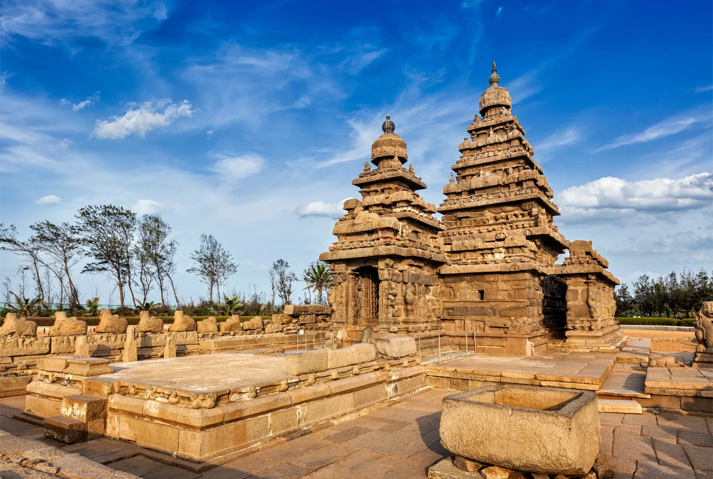

Welcome to Tamil Nadu!

Tamil Nadu, located in southern India, is known for its rich cultural heritage, classical arts, and historical
significance. The culture of Tamil Nadu is deeply rooted in its traditions, literature, music, dance, and
festivals, reflecting the state's ancient Dravidian heritage.
Festivals play a pivotal role in Tamil Nadu's cultural life. Pongal, the harvest festival, is celebrated with
great enthusiasm, marking the start of the Tamil month of Thai. The festival involves rituals, feasts, and the
creation of kolam (intricate patterns made with rice flour) at the entrance of homes. Another major festival is
Deepavali, celebrated with fireworks, sweets, and the lighting of lamps. The state also celebrates Tamil New Year,
known as Puthandu, with traditional customs and festive meals. These festivals highlight the state's agricultural
roots and communal spirit.
Tamil cuisine is renowned for its rich flavors and diverse dishes. Rice is the staple food, often accompanied by
sambar (lentil stew), rasam (spicy soup), and a variety of vegetable dishes. Popular dishes include dosas, idlis,
vadas, and biryanis. Tamil Nadu is also famous for its sweets like payasam, a type of pudding, and mysore pak, a
gram flour-based sweet. The cuisine is characterized by its use of aromatic spices, tamarind, and coconut,
reflecting the state's culinary heritage.
Music and dance are integral to Tamil Nadu’s cultural expression. Bharatanatyam, one of the oldest classical dance
forms in India, originated in Tamil Nadu and is known for its grace, precision, and expressive storytelling.
Carnatic music, a classical music tradition, is also deeply rooted in the state, with renowned composers like
Tyagaraja and Muthuswami Dikshitar contributing to its rich repertoire. These art forms are performed during
cultural festivals, temple ceremonies, and classical music concerts, showcasing the state's artistic excellence.
Tamil Nadu’s architectural heritage is a testament to its historical significance. The state is home to
magnificent temples such as the Brihadeeswarar Temple in Thanjavur, a UNESCO World Heritage site known for its
grandeur and intricate carvings. The Meenakshi Temple in Madurai, with its towering gopurams (gateway towers) and
elaborate sculptures, is another architectural marvel. These temples not only serve as places of worship but also
as cultural hubs, preserving the state's rich history and artistic traditions.
The state's literature and language are celebrated for their antiquity and depth. Tamil, one of the oldest living
languages in the world, has a rich literary tradition dating back over two millennia. Classical Tamil literature,
known as Sangam literature, includes a vast collection of poems and texts that reflect the social, political, and
cultural life of ancient Tamil society. The works of modern Tamil poets and writers continue to enrich the
literary landscape, maintaining the language's vibrancy and relevance.
Handicrafts in Tamil Nadu are renowned for their craftsmanship and artistic excellence. Kanchipuram silk sarees,
known for their rich colors and intricate zari work, are highly prized. Tanjore paintings, characterized by their
vibrant colors and gold leaf detailing, and the exquisite bronze sculptures from Swamimalai are other notable
crafts that highlight the state's artistic heritage.
Overall, Tamil Nadu’s culture is a vibrant blend of tradition, spirituality, and artistic expression. It offers
visitors a unique glimpse into the state's rich cultural tapestry, inviting them to experience its festivals,
culinary delights, classical arts, and architectural splendor. Tamil Nadu's warm hospitality and cultural richness
make it a captivating destination for travelers and culture enthusiasts alike.